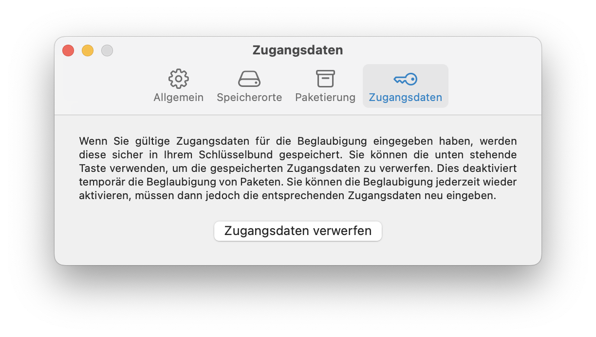
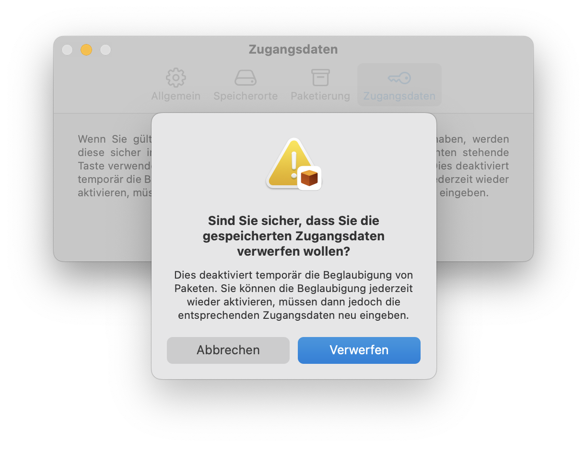

Script2Pkg
Script2Pkg
Script2Pkg
Zugangsdaten für Beglaubigung verwerfen
Sobald Sie gültige Zugangsdaten für die Beglaubigung eingegeben haben, werden diese im Anmeldeschlüsselbund Ihres Macs gespeichert. Um diese Zugangsdaten ungültig zu machen (falls sich zum Beispiel das App-spezifische Passwort geändert hat und Sie es neu eingeben wollen), gehen Sie bitte wie folgt vor:
1. Wählen Sie im Menü Script2Pkg den Menüpunkt Einstellungen … aus.

2. Wählen Sie die Option Zugangsdaten aus.

3. Klicken Sie auf die Taste Zugangsdaten verwerfen .
4. Klicken Sie auf die Taste Verwerfen im daraufhin erscheinenden Dialog.

Wenn die Zugangsdaten verworfen wurden, wird die Option Pakete beglaubigen automatisch deaktiviert.